Code
library(tidyverse)
library(lubridate)
library(scales)
library(knitr)
library(here)
# Load data
load(here("data", "zenodo_ghe_data.rda"))
# Set theme for all plots
theme_set(theme_minimal())library(tidyverse)
library(lubridate)
library(scales)
library(knitr)
library(here)
# Load data
load(here("data", "zenodo_ghe_data.rda"))
# Set theme for all plots
theme_set(theme_minimal())This analysis covers 41 publications from the research group, spanning from July 20, 2022 to October 29, 2025.
Key Statistics:
# Prepare data - create complete sequence of months and fill missing with 0
trends_data <- zenodo_data |>
mutate(year_month = floor_date(publication_date, "month")) |>
count(year_month) |>
complete(
year_month = seq(min(year_month), max(year_month), by = "month"),
fill = list(n = 0)
)
# Create plot
trends_data |>
ggplot(aes(x = year_month, y = n)) +
geom_line(linewidth = 1) +
geom_point(size = 2) +
labs(title = "Monthly Publications",
x = "Month",
y = "Number of Publications") +
scale_x_date(date_breaks = "3 months", date_labels = "%b\n%y") +
ylim(0, max(trends_data$n))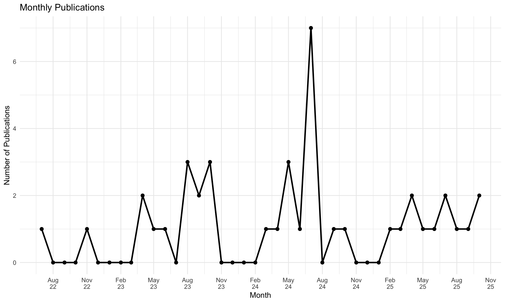
# Prepare data
trends_by_type_data <- zenodo_data |>
filter(!is.na(resource_type)) |>
mutate(year = year(publication_date)) |>
count(year, resource_type)
# Create plot
trends_by_type_data |>
ggplot(aes(x = year, y = n, fill = resource_type)) +
geom_col(position = "stack") +
labs(title = "Publications by Type Over Time",
x = "Year",
y = "Number of Publications",
fill = "Resource Type") +
scale_x_continuous(breaks = \(x) seq(floor(min(x)), ceiling(max(x)), 1))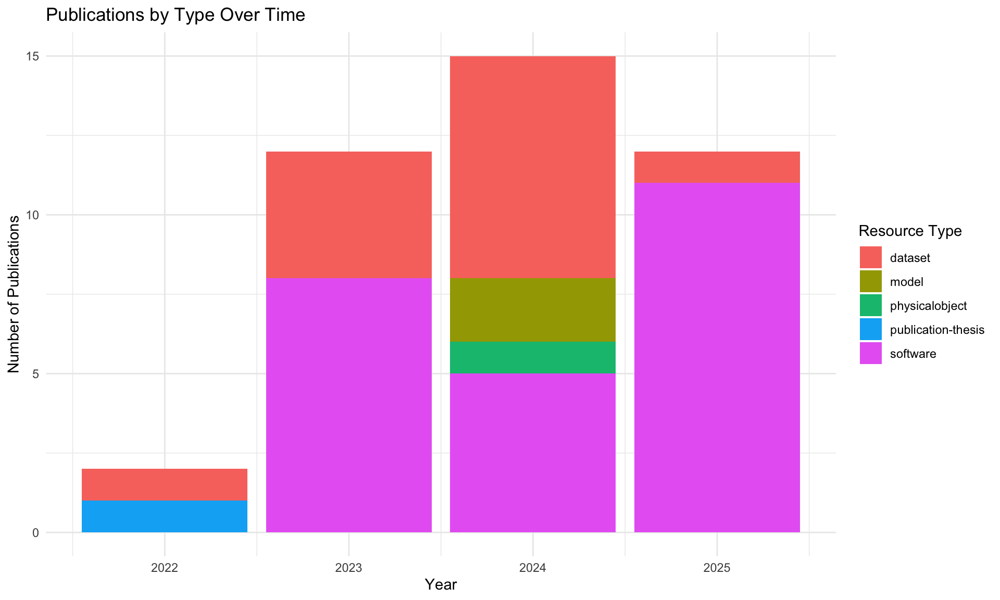
# Prepare data
resource_types_data <- zenodo_data |>
filter(!is.na(resource_type)) |>
count(resource_type, sort = TRUE) |>
mutate(resource_type = fct_reorder(resource_type, n))
# Create plot
resource_types_data |>
ggplot(aes(x = n, y = resource_type, fill = resource_type)) +
geom_col(show.legend = FALSE) +
labs(title = "Distribution of Resource Types",
x = "Number of Publications",
y = "Resource Type")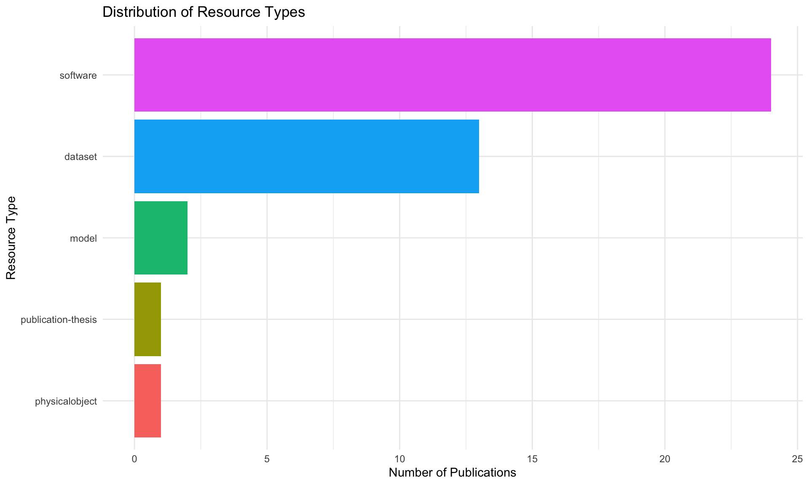
Summary:
zenodo_data |>
filter(!is.na(resource_type)) |>
group_by(resource_type) |>
summarise(
unique_views = sum(unique_views, na.rm = TRUE),
unique_downloads = sum(unique_downloads, na.rm = TRUE)
) |>
pivot_longer(cols = c(unique_views, unique_downloads),
names_to = "metric",
values_to = "count") |>
mutate(metric = ifelse(metric == "unique_views", "Unique Views", "Unique Downloads")) |>
ggplot(aes(x = resource_type, y = count, fill = metric)) +
geom_col(position = "dodge") +
labs(title = "Unique Views and Downloads by Resource Type",
x = "Resource Type",
y = "Count",
fill = "") +
theme(axis.text.x = element_text(angle = 45, hjust = 1))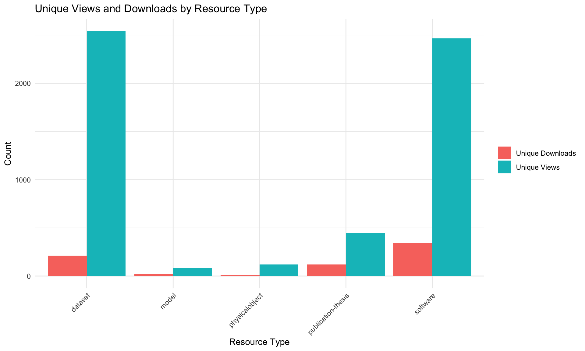
zenodo_data |>
arrange(desc(unique_views)) |>
slice_head(n = 15) |>
mutate(title = str_trunc(title, 50),
title = fct_reorder(title, unique_views)) |>
ggplot(aes(x = unique_views, y = title, fill = title)) +
geom_col(show.legend = FALSE) +
labs(title = "Top 15 Records by Unique Views",
x = "Unique Views",
y = "")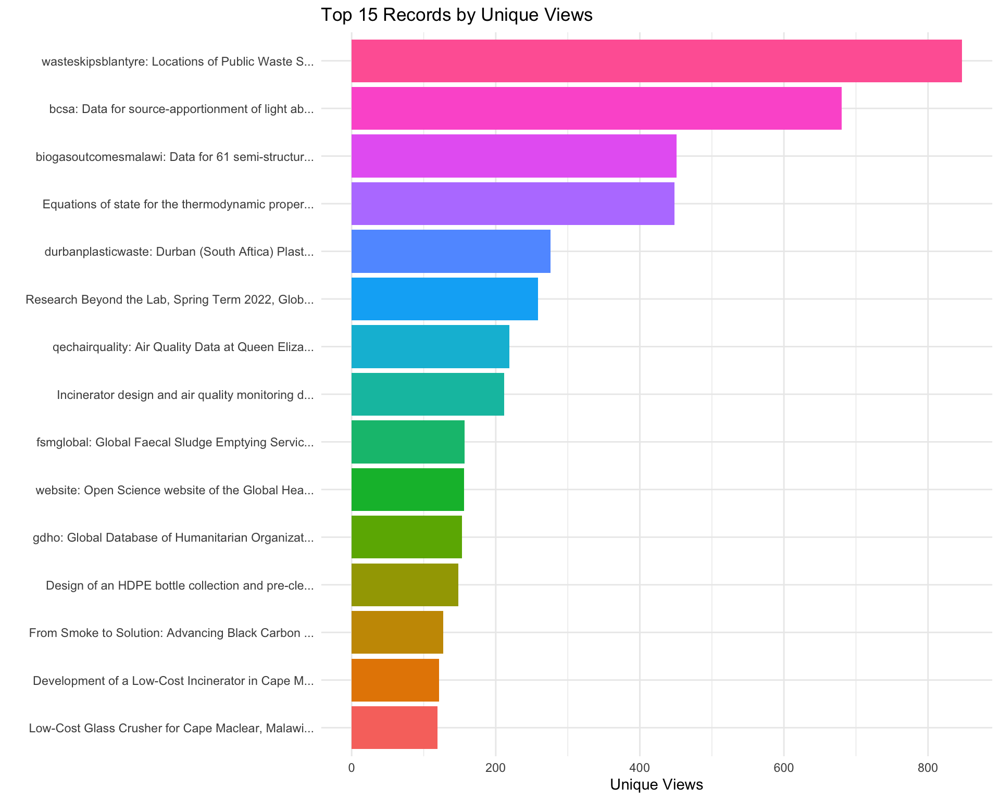
zenodo_data |>
filter(unique_downloads > 0) |>
arrange(desc(unique_downloads)) |>
slice_head(n = 15) |>
mutate(title = str_trunc(title, 50),
title = fct_reorder(title, unique_downloads)) |>
ggplot(aes(x = unique_downloads, y = title, fill = title)) +
geom_col(show.legend = FALSE) +
labs(title = "Top 15 Records by Unique Downloads",
x = "Unique Downloads",
y = "")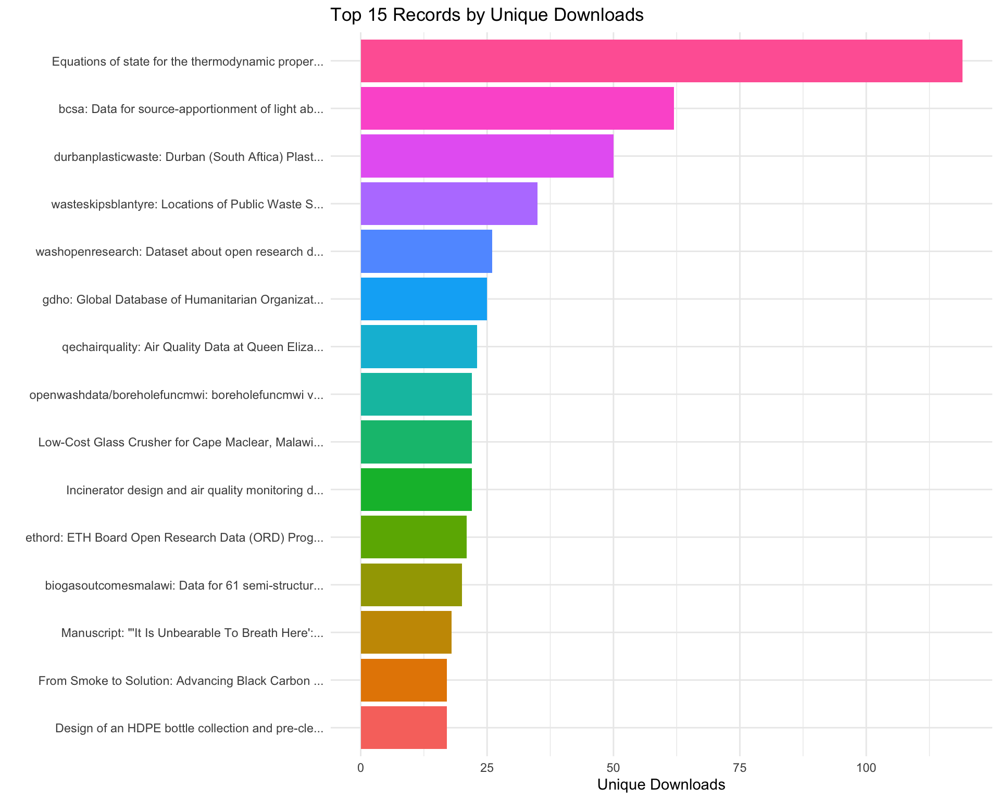
| License ID | License Name | Count | Percentage |
|---|---|---|---|
| cc-by-4.0 | Creative Commons Attribution 4.0 International | 39 | 95.1 |
| cc0-1.0 | Creative Commons Zero v1.0 Universal | 1 | 2.4 |
| other-open | Other (Open) | 1 | 2.4 |
# Prepare data
collaboration_data <- zenodo_data |>
left_join(authors_data |> count(record_id, name = "n_authors"),
by = "record_id") |>
filter(!is.na(n_authors)) |>
count(n_authors)
# Create plot
collaboration_data |>
ggplot(aes(x = n_authors, y = n)) +
geom_col() +
labs(title = "Number of Authors per Publication",
x = "Number of Authors",
y = "Number of Publications") +
scale_x_continuous(breaks = \(x) seq(floor(min(x)), ceiling(max(x)), 1))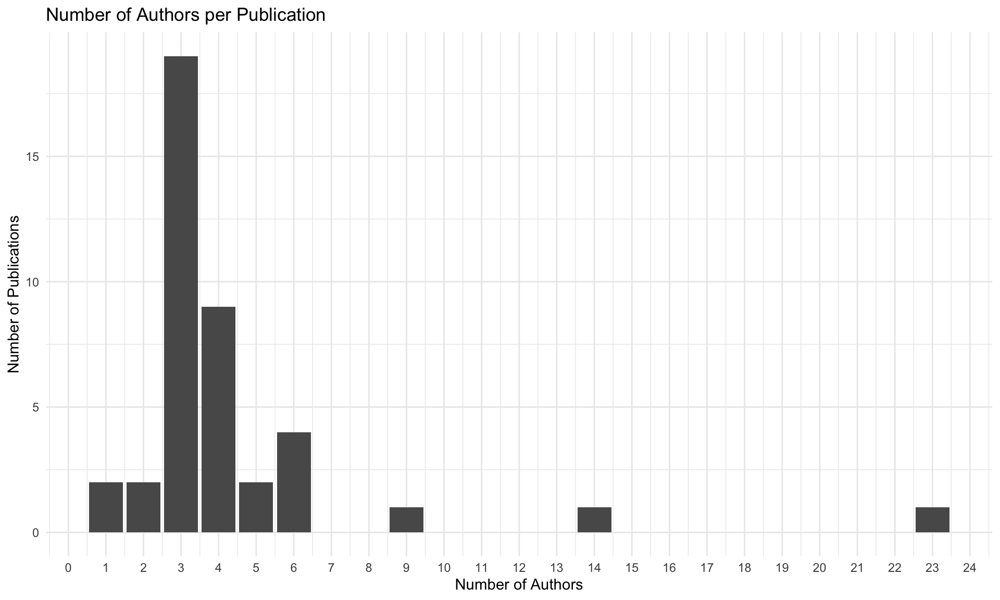
# Prepare data
auth_count <- authors_data |>
count(author_name, sort = TRUE) |>
filter(n>=3) |>
mutate(author_name = fct_reorder(author_name, n))
# Create plot
auth_count |>
ggplot(aes(x = n, y = author_name, fill = author_name)) +
geom_col(show.legend = FALSE) +
labs(title = "Top Authors (3+ Publications)",
x = "Number of Publications",
y = "Author")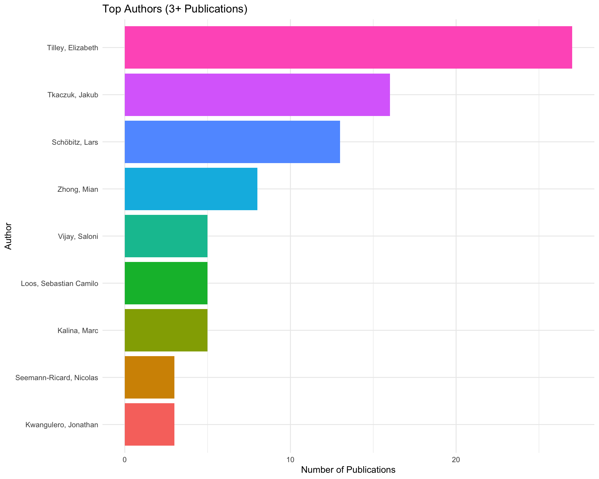
| Subject | Count |
|---|---|
| malawi | 2 |
| #swm | 1 |
| Waste management | 1 |
| africa | 1 |
| air quality | 1 |
| black carbon | 1 |
| equations of state | 1 |
| fluid mixtures | 1 |
| glass | 1 |
| glass-crusher | 1 |
| hardware | 1 |
| hardware-designs | 1 |
| incineration | 1 |
| regulations | 1 |
| solid waste | 1 |
| thermodynamic properties | 1 |
# Calculate communities per record
communities_per_record <- zenodo_data |>
left_join(
communities_data |> count(record_id, name = "n_communities"),
by = "record_id"
) |>
mutate(n_communities = replace_na(n_communities, 0))
# Prepare data for plotting
community_dist_plot_data <- communities_per_record |>
count(n_communities) |>
mutate(
pct = round(n / sum(n) * 100, 1),
community_label = case_when(
n_communities == 0 ~ "No community",
n_communities == 1 ~ "1 community",
TRUE ~ paste(n_communities, "communities")
),
community_label = fct_reorder(community_label, n_communities)
)
# Create plot
community_dist_plot_data |>
ggplot(aes(x = n, y = community_label, fill = as.factor(n_communities))) +
geom_col(show.legend = FALSE) +
geom_text(aes(label = paste0(n, " (", pct, "%)")),
hjust = -0.2, size = 4) +
labs(title = "Distribution of Community Membership",
subtitle = "Number of communities per record",
x = "Number of Records",
y = "Community Status") +
expand_limits(x = max(community_dist_plot_data$n) * 1.15)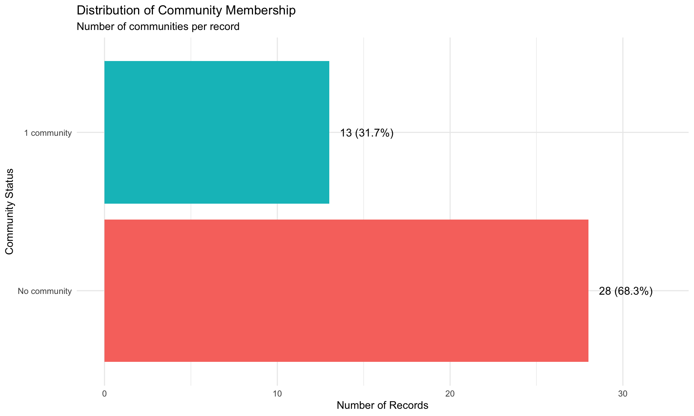
Community Membership Statistics:
| Community | Title | Records |
|---|---|---|
| openwashdata | Open WASH data by building Open Science Competencies and Community | 12 |
| eu | EU Open Research Repository | 1 |
ORCID Coverage:
Affiliation Coverage:
# Prepare data
metadata_completeness_data <- tibble(
metric = c("ORCID", "Affiliation"),
percentage = c(
sum(!is.na(authors_data$author_orcid)) / nrow(authors_data) * 100,
sum(!is.na(authors_data$author_affiliation)) / nrow(authors_data) * 100
)
)
# Create plot
metadata_completeness_data |>
ggplot(aes(x = metric, y = percentage, fill = metric)) +
geom_col(show.legend = FALSE) +
geom_text(aes(label = paste0(round(percentage, 1), "%")),
vjust = -0.5, size = 5) +
labs(title = "Author Metadata Completeness",
x = "Metadata Field",
y = "Percentage of Authors") +
ylim(0, 100)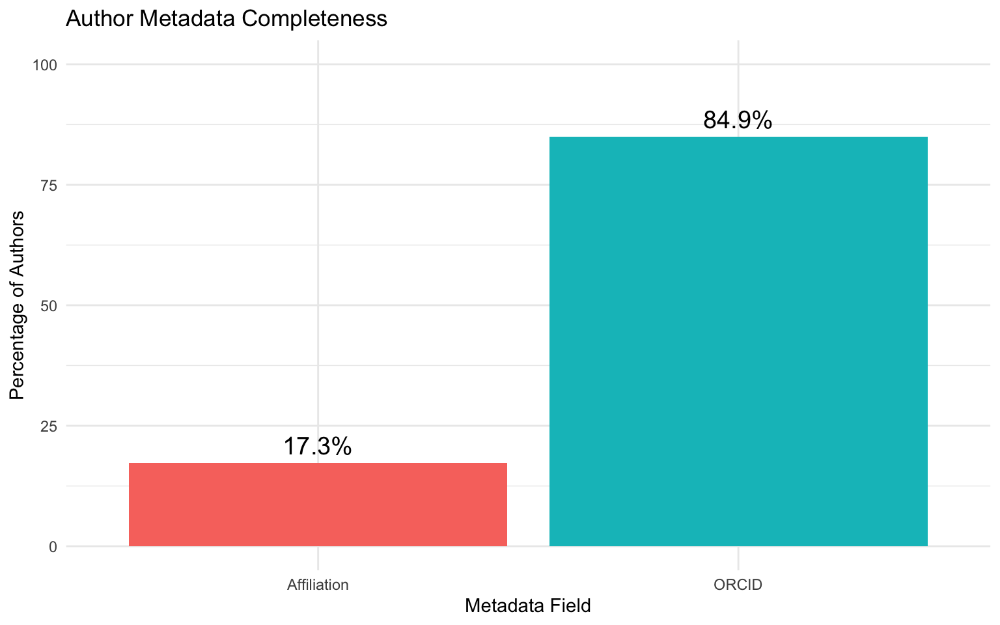
affiliation_data <- authors_data |>
filter(!is.na(author_affiliation), author_affiliation != "")
if (nrow(affiliation_data) > 0) {
# Prepare data
aff_count <- affiliation_data |>
count(author_affiliation, sort = TRUE) |>
slice_head(n = 15) |>
mutate(author_affiliation = fct_reorder(author_affiliation, n))
# Create plot
aff_count |>
ggplot(aes(x = n, y = author_affiliation, fill = author_affiliation)) +
geom_col(show.legend = FALSE) +
labs(title = "Top 15 Institutional Affiliations",
x = "Number of Author Entries",
y = "Affiliation")
} else {
cat("No affiliation data available")
}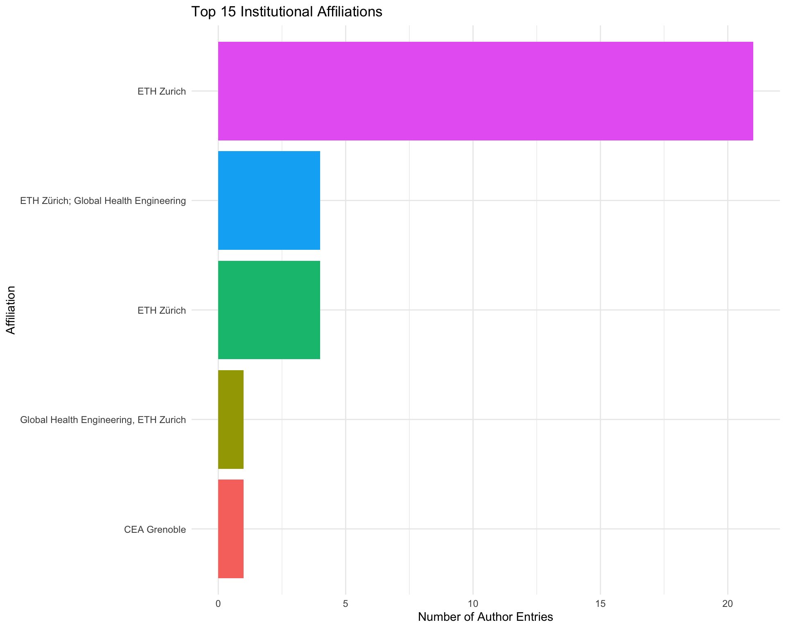
| Resource Type | Count | Avg Size (MB) | Median Size (MB) | Max Size (MB) |
|---|---|---|---|---|
| software | 24 | 28.04 | 5.92 | 348.94 |
| dataset | 13 | 90.99 | 2.76 | 1114.93 |
| model | 2 | 2.60 | 2.60 | 4.51 |
| physicalobject | 1 | 77.69 | 77.69 | 77.69 |
| publication-thesis | 1 | 18.51 | 18.51 | 18.51 |
GitHub Repository Links:
| Relation | Count |
|---|---|
| issupplementto | 20 |
| compiles | 6 |
| iscompiledby | 4 |
| isdocumentedby | 1 |
if (nrow(github_data) > 0) {
# Prepare data
github_by_type_data <- zenodo_data |>
mutate(has_github = record_id %in% github_data$record_id) |>
filter(!is.na(resource_type)) |>
count(resource_type, has_github)
# Create plot
github_by_type_data |>
ggplot(aes(x = resource_type, y = n, fill = has_github)) +
geom_col(position = "stack") +
labs(title = "GitHub Integration by Resource Type",
x = "Resource Type",
y = "Number of Publications",
fill = "Has GitHub Link") +
theme(axis.text.x = element_text(angle = 45, hjust = 1))
} else {
cat("No GitHub data available for visualization")
}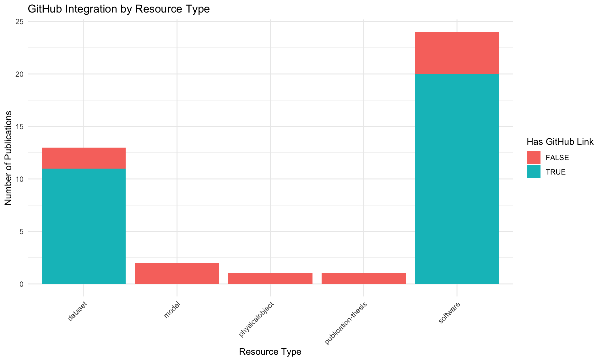
Note: Relation types follow the DataCite Metadata Schema:
| total_records | total_size_gb | avg_size_mb | median_size_mb | avg_authors |
|---|---|---|---|---|
| 41 | 1.91 | 47.73 | 4.46 | 4.37 |